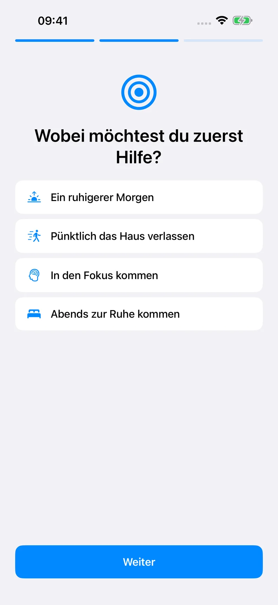
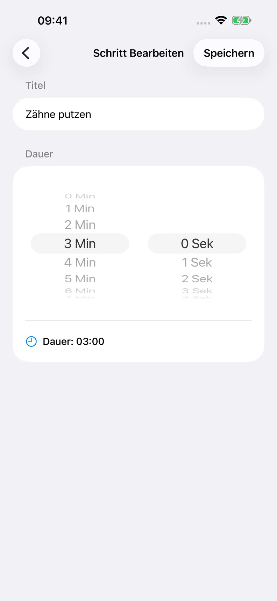

Finde deinen Anfang
Wähle eine Vorlage oder erstelle deine eigene Routine.
ETWAS STRUKTUR FÜR DEINEN ALLTAG
Dein Tag, etwas übersichtlicher. Mache aus deinem Morgen, deiner Fokuszeit oder deinem Abend eine Routine, der du Schritt für Schritt folgen kannst.
Starte mit 3 kostenlosen Routinen. Optionales Pro-Abo.

Deine Routine. Dein Tempo.
So funktioniert’s
Ein klarer Platz für den nächsten Schritt.
Wähle eine Vorlage oder erstelle deine eigene Routine.
Ändere die Schritte, ihre Reihenfolge und die Zeit für jeden Schritt.
Starte den Timer. Pausiere, wenn du es brauchst. Gehe weiter, wenn du bereit bist.
ROTINELY
Wähle, was du dir leichter machen möchtest. Behalte hilfreiche Schritte und ändere den Rest. Es kann so einfach sein wie das Haus zu verlassen.
Die Bilder zeigen beispielhafte Routinen.


Kostenlos & Pro
Monats- und Jahresabos werden in der App in deiner Landeswährung angezeigt. Ein möglicher Testzeitraum und der anschließende Preis werden vor dem Kauf angezeigt. Pro verlängert sich automatisch, sofern du nicht über Apple kündigst.
Praktische Anleitungen
Einfache Beispiele, die du an deinen Alltag anpassen kannst.
Praktische Anleitungen
Eine Morgenroutine mit fünf Schritten und anpassbaren Zeiten. Passe sie an deinen Alltag an und nutze einen Routinen-Timer auf iPhone oder iPad.
Anleitung lesenPraktische Anleitungen
Teile eine Routine in klare Schritte auf, lege Zeiten fest und entscheide, wann du pausierst oder weitergehst. Ein praktischer Leitfaden mit Rotinely.
Anleitung lesenFAQ
Du entscheidest, wann der nächste Schritt beginnt. Bei null wechselt die Routine nicht automatisch weiter.
Mitteilungen benötigen deine Erlaubnis. Fokus, Lautlosmodus, Geräteeinstellungen und iOS können Zustellung und Ton beeinflussen. Sprachführung funktioniert bei geöffneter App und ist kein garantierter Hintergrundalarm.
Im geprüften Relaunch-Build ist iCloud-Synchronisierung nicht aktiv. Verlasse dich nicht darauf, um Daten zu sichern oder zwischen Geräten zu synchronisieren.
Nein. Rotinely ist ein Werkzeug zur persönlichen Organisation. Es diagnostiziert, verhindert oder behandelt weder ADHS noch andere Erkrankungen und ersetzt keine professionelle Versorgung.
Verwalte dein Abo in den Einstellungen deines Apple Accounts. Das Löschen der App kündigt kein Abo.
Probiere eine Routine, die zu deinem Alltag passt.
Im App Store ansehenVerfügbarkeit und Angebote hängen von deiner App-Store-Region ab.